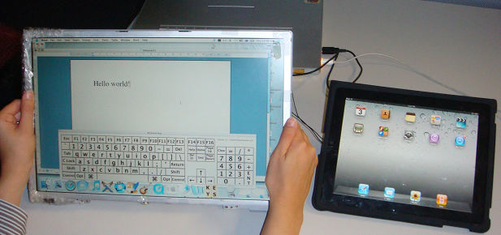

17-inch BackPad Mobile Device
Publications
Description
What will a truly large iPad be like? Will it have a touchscreen at the front, or will some other changes be forced by the sheer sizeof the device? We mocked up a working device using a 17-inch Macbook laptop screen. The device size was too large for us to comfortably hold with one hand while using the other hand for touch input, so we placed the touch pad at the back. Hence, wecall our device a BackPad. In the first experiment, we compared user performance with our 17-inch BackPad and a normal iPad in game and typing tasks. The results on the game completion time and score were similar, and users liked our large screen, while time but not spelling errors were different in the BackPad versus the iPad. For the second experiment, we compared the front touchscreen versus the back trackpad user performance on same sized devices. Similar results to the first experiment were found on game completing time and score.